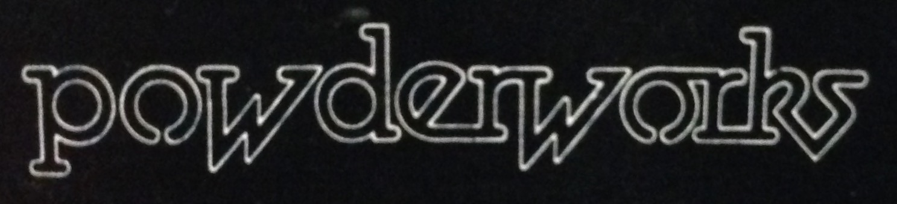

Powderworkers used to meet in one place only. Now the community meets in more than one place, as the times change and technical community platforms emerge.
If you are a community of Powderworkers thriving outside of these, you are welcome to mail the webadmin to ask to list your community here.
Facebook (public) | Powderworkers | 2016 - current | 5000 members
This is the open public group with past "majordomo" era people, people who'd never been in PW but been Oils fans forever, and Oils newcomers. Notably this is an open group, so your posts are visible to the public.
Yahoo "take 2" (public, approve to join) | Powderworks | Email Subscription | Jan 2005 - current | 700 members
Facebook (private) | Powderworks | March 2017 - current | 370 members
This is a closed group of mostly past "majordomo" era people in the same style as yhe Yahoo mail lists but in a Facebook way. Perhaps best thought of an intersection of the Yahoo list and Facebook.
Notably, this is a closed group, so your privacy is kept inside the space.
Yahoo "take 1" | The Powderworks Archives | Sept 2001 - Jan 2005 | 700? members
MajorDomo at Colorado Uni | Lost in time, but here's The Deadheart's explanation | ~1995 - Sept 2001 | 700? members
Want to improve the website? Send me a "pull request" on GitHub.
Note that this site aims to be stable and durable - so we are not accepting radical content changes, only in-tune corrections and additions.
mailto: webadmin @ powderworks . org